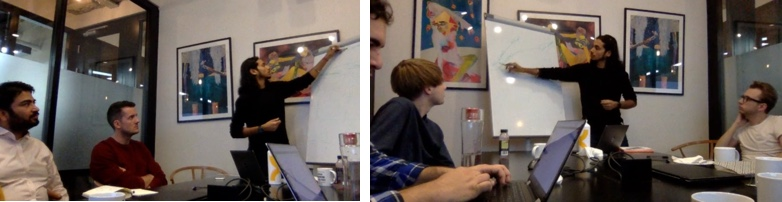
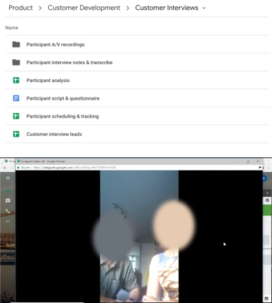

PROBLEM
Property investment market is broken. Traditional companies such as Rightmove and Zoopla are focused on residential property while do not fully cater for buy-to-let (BTL).
With the inception of companies like AirBNB, the market have seen an unprecedented growth and shift towards short-term BTL over long-term BTL due to higher rental yields. This has created new opportunity as well as uncertainity.
There is no easy way to understand the valuation and rental yield of a property. Investors depends on property brokers, subscribe to market trends, some guestimates and some does detailed analysis using traditional time-consuming methods in excel.
These techniques are risky, unreliable, expensive, in-efficient, stressful and often ends up in bad deals.
Yuvoh aims to reduce stress for buying investment properties by removing any friction through data and transparency, providing a delightful experience.
Yuvoh provides a short-term and long-term rental yield model for property investor. It's model is based on machine learning techniques that analyses a variety of online, offline and hidden data sources, including real estate portals, property marketplace platforms (like RightMove & AirBnB) and government statistics.
Further, it provides an end-to-end service delivery from buying an investment property to letting it out.

AIM
A MVP (Minimum Viable Product) was built that gained popularity among property investors (network of early adopters) due to its yield estimation engine but it had challenges around user Experience, engagement and product-market fit. While MVP proofed that the model works, it failed to engage users due to lack of User experience.
The goal was to design a consistent and coherent experience for the users while increasing their engagement.
REQUIREMENT GATHERING
I began the project by running stakeholder workshops to understand their requirements and familisarise myself. This helped me in developing insights on the business, roadmap, constraints and technical feasibility and get an entire picture of the user and the vision the team had for the platform . I used a modified version of business model canvas.

Further I teamed up with the product manager to map out the key stages in the customer journey and how the business currently addressed those needs for the customers. This provided a set of hypotheses to test and some ideas to explore by directly interacting with the customer.
DESIGN RESEARCH
I conducted expert customer interviews, evaluation of the exisiting MVP and competitor analysis to drive our design research phase.

Figure 4: Customer Journey (Tool: Trello for Customer journey for each persona)
Contextual Interview
Together with the product manager, I began interviewing a number of property investors, from first-timers to experienced investors, participants were sourced through personal network and paid ads.
The interview was focused on their approach, experience and pain-points. Interviews were done over Google Hangout.
Figure 4: Cognitive walkthrough results
Cognitive walkthrough
Based on the interviews, the next logical step was to go through the MVP putting myself in the user's shoe. I choose few key tasks and conducted a cognitive walkthrough evaluation.
KEY FINDINGS
The research phase gave us insights about how people would discuss investment with their close network over social media, they would attend property education and networking events and majority of them are subscribed to property alerts.
We noticed that guaranteed yield and short-term BTL were preferred over long-term BTL. Further the evaluation provided insights on the existing platform’s content structure, core features and user journeys. We drew on these insights all the way through the design process.
EMPATHY
Personas:
Our research highlighted 3 main users (beginner, intermediate and expert investor) who had their unqiue needs. We created 3 individual personas as shown below.
This helped us to create empathy and find commonilities. We referred to them throughout the entire product development process.
Journey Maps:
Further we created journey maps to understand the customer intention, their action and how customers could find and interact with our service if we were to exist.

Figure 4: Customer Journey (Tool: Trello for Customer journey for each persona)
IDEATE

Creating wireframes and low-fidelity prototypes for user testing
Yuvoh has more structured data on property than any other platform in the UK. From our research, we were able to work out what matters to its customers and how to visualise those insights in a way that customers can understand. It would also help the customers make informed decisions and build trust in the site.
They didnt care about viewing the house per se nor care about the location, they cared more about the point of interest around the location was an important early factor. So we mapped out all the different PoIs and how that could be intergrated into the platform. These kinds of insights occurred throughout our design research process and fed into our visual design direction for each product line.

DESIGN
We quickly moved into the product design phase. Sketching wireframes allowed us to quickly test design solutions to customer problems. Crafting several key user journeys for each of our personas, was the best way to conceptualise and structure the proposed content and functionality.
We tried out a range of ideas as lo-fi sketches and then developed them into mid-fi wireframes in Invision Freehand. These wireframes were tested and iterated multiple times with the early adopters.

Figure 4: Customer Journey (Tool: Trello for Customer journey for each persona)
Process Map:
This was followed by process map that would aid in translating the journey map into wireframes
I worked with Yuvoh design team in a series of 2-week sprints to define the key features of the new platform.
USER TESTING
The interviews helped us piece together the process that is undergone when a new client is signed on. We found there were dips inefficiency caused by non-automated systems, use of multiple tools between departments, and inability to track a client once they've been onboarded.
We identified features that would help customers understand their choices and make more informed, confident purchase decisions.
For example, the distinction between the need for rich visuals and 360º viewability when making a decision to purchase a property opposed to the specific discoverable information and the comparative size of vehicles required by car buyers. User insight helped set the design direction quickly and show this in a Proof of Concept. This meant that before significant investment in development we could check and improve our thinking with feedback from business stakeholders and target customers.
DESIGN SYSTEM
The complex nature of the app necessitated more than 70 screens.
To maintain consistency and ensure efficient design to dev handover, I developed a modular design system based on reusable components and their states, such as cards, list items, and controls. Every component can be rearranged and combined with others while maintaining design consistency and recognizable UI patterns for the user.
OUTCOME
Foolproof designed and developed the end-to-end journeys for the whole Post Office mortgage range. This successfully incorporated the two new propositions which give first-time buyers a different way to become home-owners.